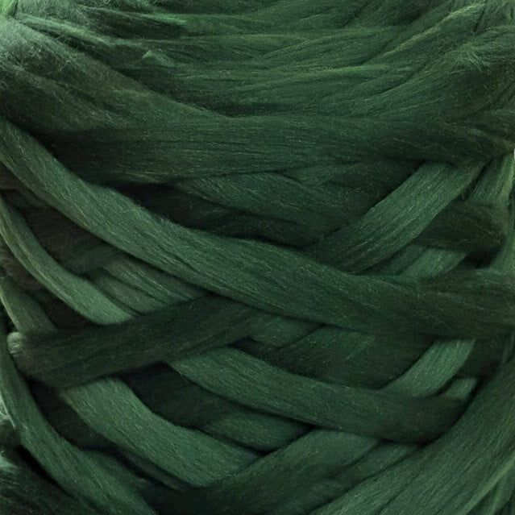
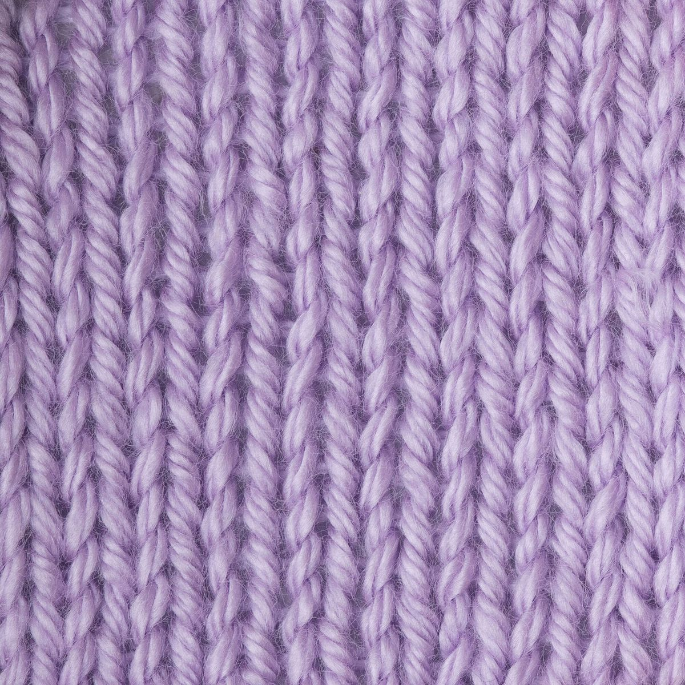
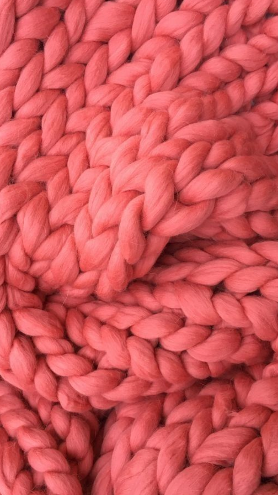
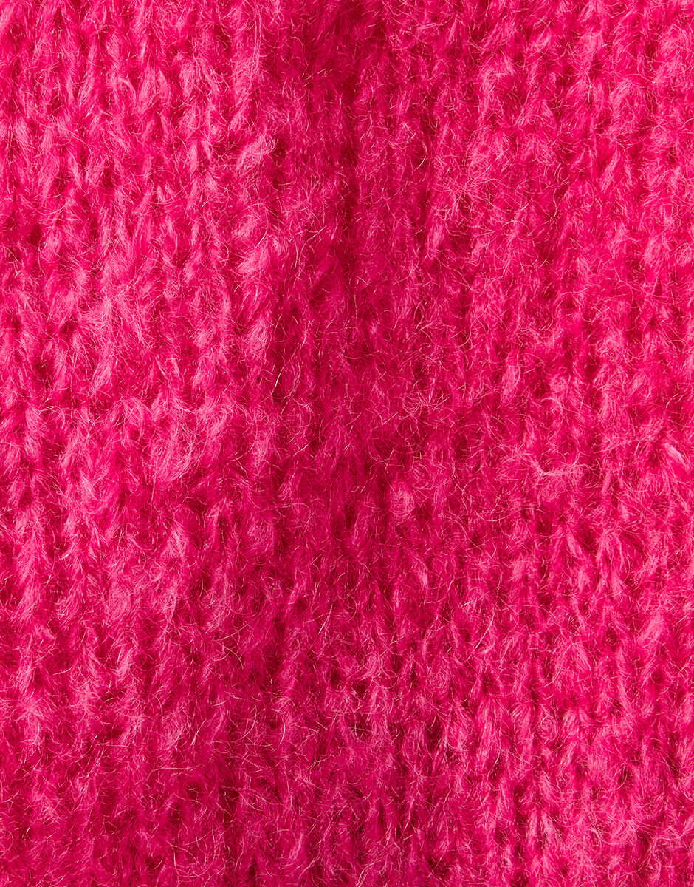
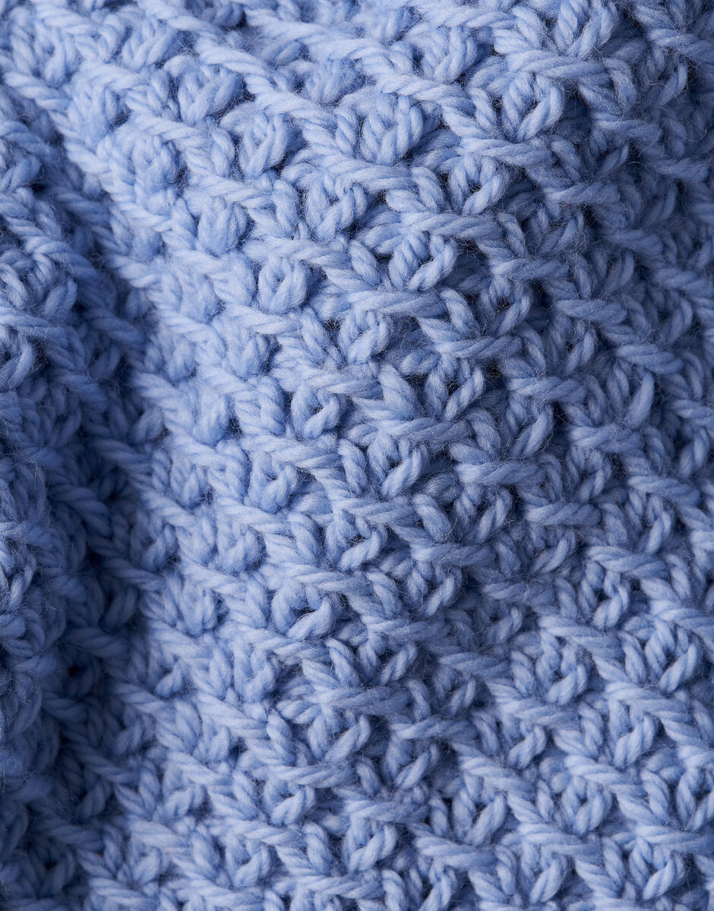
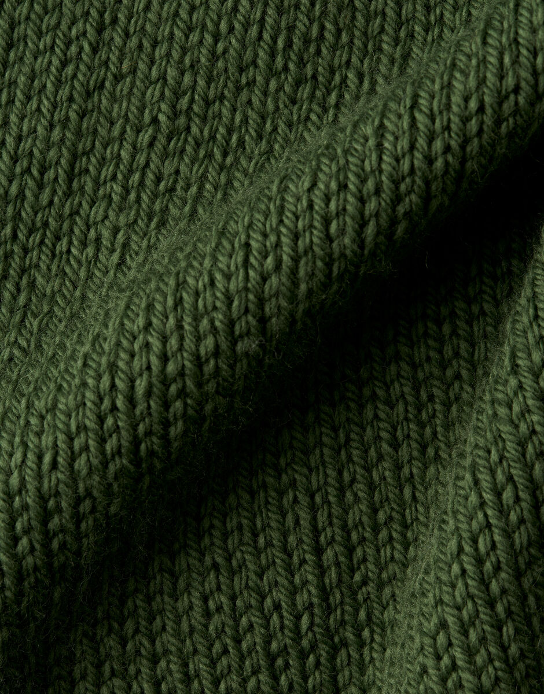
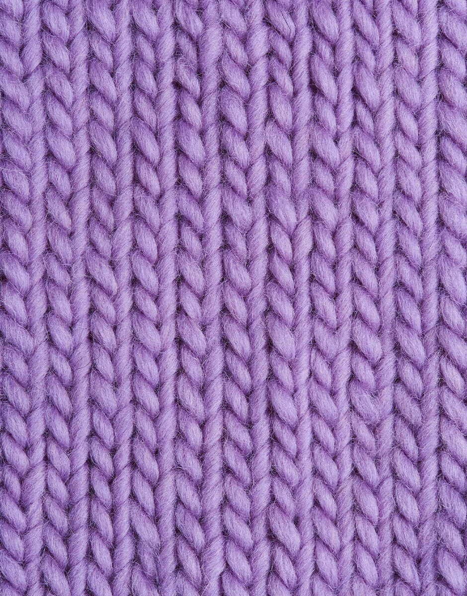
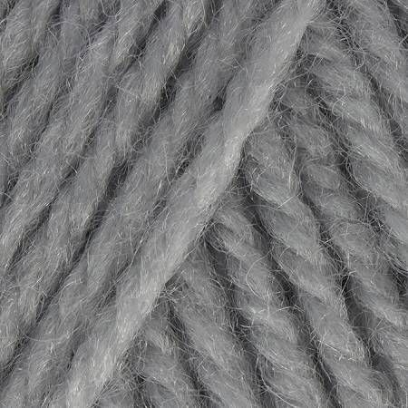

A cabled cardigan, lifted from black and white into coral, washed.
1200 × 1200
Try the yarn before you cast on.
Try it now

From our collection, or a photograph from your studio.











A snap of your shade card, a skein on a windowsill, or a colour you saw in a dream.
JPG or PNG, up to 5 MB
A flat lay, a hung shot, or a finished piece you have knit. Even lighting and a quiet background help the engine read the texture.
JPG or PNG, up to 8 MB
Body · Coral
Sleeve · Mint
Sleeve · Mint
Pockets · Indigo
The engine can read images up to 8 megabytes. Yours was 12.4 MB. Try saving a smaller copy, or choose a different photograph.
Your file looks like a HEIC, the format iPhone uses by default. Save a JPG copy and bring it back in, and the engine will know what to do with it.
A flat lay on a quiet background reads best, with even lighting and the whole piece in frame. Skeins, bobbins and works in progress are for the yarn picker.